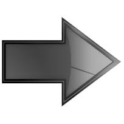

Солнечные лучи пробивались сквозь занавешенное окно. Шторы не были плотно задернуты, что позволяло утренним лучам просачиваться в комнату наполняя ее хорошим настроением. Утро было прекрасным. В нормальных обстоятельствах такое начало дня должно было вызывать в человеке позитивные эмоции, поднимать настроение, давать силы радоваться жизни. Но это в нормальных обстоятельствах, у нормальных людей, а сегодня Лазарь лежал на диване в своей однокомнатной квартире и бессмысленно смотрел на пыльные шторы. Казалось еще совсем недавно он прибивал карниз, цеплял прищепки, вымерял по высоте шторы что бы не были слишком высоко но и не собирала пыль на полу. Выбирая расцветку он никак не мог найти компромисс, все что действительно нравилось, стоило столько, сколько он заплатить уже не мог, а платить за то что не нравится как то совсем не хотелось. Сделать выбор помогли соседи, просто подарившие новому жильцу, купившему недавно квартиру в их доме уже готовые, в целом не плохие шторы. Они тоже не совсем соответствовали его критериям идеальных штор но были бесплатными, и это был веский и решающий аргумент. Эти бытовые хлопоты раньше никогда не занимали его, но в то время они помогли не сойти с ума, была причина быть среди людей, что то делая, принимая хоть даже такие незначительные решения как покупка штор, он отвлекался от грустной реальности, которая как черная дымка окутывала весь его уже очень небольшой мирок. Дались ему эти шторы. Но глаза, бесцельно шарившие по стене напротив, как-то сами остановились на них. Без них в комнате было бы как то пусто, не уютно, как в жизни в которой есть многое, но нет например друзей, или любимого дела, или хорошей семьи. Вроде бы живешь, но так, как будто пишешь черновик гениального произведения, думая что вот- вот из разных вариантов черновика выберешь лучший, и наконец заживешь по самому лучшему из написанных сценариев. Вот и его единственная комната, в которой и так было мало уюта и тепла, временами казавшаяся ему пещерой, была бы уж совсем пустынной без штор. Две прищепки, как раз по середине, были оторваны, и медленно опускаясь глазами вниз как бы разглаживая многочисленные складки, он обнаружил нижний край лежащим на полу. Легкая улыбка больше похожая на ухмылку приподняла уголки его губ - то чего он старался избежать, так тщательно вымеряя высоту, произошло. Квартира выглядела неплохо, и совсем не была похожа на берлогу одинокого холостяка, каким он сейчас был, хотя хозяйский взгляд сразу бы нашел куда приложить умелую руку. Вот возле батареи, как раз под окном на стыке разошлись обои. На старом шкафу, который хозяева квартиры оставили при продаже не хватало ручки. Шкаф был очень старый, из чистого дерева, и казалось стоял здесь с момента постройки дома, будучи свидетелем драм и радостей жильцов. Кроме отсутствия денег после покупки квартиры была еще одна причина по которой шкаф не отправился на мусорку. Странное чувство охватило Лазаря когда он первый раз увидел его, удивительная аналогия пришла в голову - они оба много повидали на своем веку. Так он и остался стоять на том же месте, в квартире сменившей хозяина, все также молчаливо уходя шпонированными дверями под самый потолок. На подоконнике, даже с того места где лежал Лазарь виднелась пыль. Его город не славился чистотой, поэтому всякий раз когда окно было открыто, на подоконнике образовывался налет желтовато - бурой пыли. Окно было открыто… Сколько же было открыто окно? Он уже и не помнил, поэтому подоконник так и манил к себе толстым слоем пыли. Было время когда его дом блестел чистотой, он был очень чистоплотен: стирал, чистил, мыл, в общем, любил что бы во всем был порядок. Когда его лабрадор забегал в дом после очередной прогулки под дождем, радостно улыбаясь своему хозяину, виляя хвостом разбрызгивал тысячи капель по сторонам, он терпеливо вытирал пол, и мыл лапы питомцу. Собаку он не хотел, понимал ответственность, обязанности, но домашние буквально влюбились в это рыжее добродушное чудовище, и он не смог отказать. Ему приятно было наблюдать, как сын на коленках подползал к собаке мирно лежащей на полу у его ног, брал ее за уши заглядывая в глаза, дул прямо в нос. Животное морщилось, пыталось вырваться, крутило головой, даже иногда рычало но никогда не кусало. Что бы с ним не вытворяли, никогда не кусало. А особенно ему нравилось когда собака лежа на спине, извивалась ворочая головой из стороны в сторону, смешно согнув лапы, раскинув уши по полу, и приоткрыв немного пасть, казалось радостно улыбалась. Сын искренне смеялся, чухая ей пузо, и от этого казалось улыбка собаки становилась все шире и искреннее. Животное постепенно стало частью их не большой, но очень дружной семьи поэтому когда из-за болезни пришлось усыпить собаку, в их семейный мирок пришел настоящий траур, погрузивший их в печаль на несколько дней показавшихся им вечностью. Это был наверное первый большой удар который нанесла судьба Лазарю, забрав у него нечто дорогое его семье и его сердцу. Он закрыл глаза. Воспаленное сознание уносило его, куда- то далеко. В памяти всплывали картины из беззаботного детства, юности. Теперь все что у него оставалось это его воспоминания. Он был наедине с ними, просматривая как эпизоды фильма, уже не проживая а, наблюдая как бы со стороны, пытаясь вспомнить все до мельчайших подробностей. Звуки, запахи, голоса, переживаемые в тот момент эмоции, все теперь было таким родным, многое так хотелось вернуть, повторить снова, что то изменить, переписать заново, куда то хотелось вернуться и остановив мгновение навсегда задержаться. Но жизнь не дано прожить дважды. Череда встреч, знакомств, казалось бы не заметных на первый взгляд событий, и в результате всего принятых решений и составляет жизнь. Он все еще мог не с безразличием а с печалью вспоминать своего отца когда тот возвращался домой пьяный включал телевизор и засыпал за столом в кухне. Десятилетним ребенком, проснувшись среди ночи от громко работающего телевизора, ему приходилось, будить отца и почти волоком тащить его на диван. От него воняло перегаром, яичницей с луком и еще кто знает чем, и можно было бы простить, если бы это было один раз, но отец бывал в таком состоянии очень часто, вынося мозг пьяными нравоучениями. Он не ненавидел его, не испытывал безразличия а напротив печаль, печаль и огромное сожаление что человек давший ему жизнь, сам не разобравшись с ее смыслом оказался слаб и заливал алкоголем черную пустоту съедающую его изнутри. Что то, выше его осознанного понимания, не давало ненависти поселиться в его сердце. Конечно, он имел право на ненависть, были и причины для нее, но что то внутри, заложенное не им, и очень глубоко, твердило: родителей не выбирают, их просто любят, и уважают. Его глаза наполнились слезами, при этих воспоминаниях. Он любил отца, хотя и никогда не говорил ему этого. Отец не часто улыбался, редко шутил или смеялся, да и разговоры по душам было не его. Как то не получалось у него разговаривать с сыном откровенно, по трезвому не получалось, а на пьяную голову не хотел Лазарь. Хотя и нельзя сказать что от отца Лазарь видел только плохое. Много было и хорошего, но хорошее не запоминается сразу, оно откладывается в памяти и вспоминается потом, со временем. Сильные эмоции, такие как злость или ненависть проявляются быстро, разгораются мгновенно, но если их не хранить и не беречь, так же быстро и проходят, и с течением времени уступают место тому что в человеке лежит очень глубоко: добру, и любви. С годами все негативное в нем потеряло силу, он смог простить обидчиков, отпустить тех кто ему был должен, кто поступал с ним не справедливо. Нет, безусловно он сожалел. Сожалел например о том что так редко говорил родителям о своих чувствах, особенно когда стал взрослым. Только сейчас он понимал что им это было нужно также как и тогда когда он, будучи маленьким мальчиком забирался на колени отца, и на его вопрос «сынок ты меня любишь?» говорил ему в самое ухо: конечно люблю, пап. Он сожалел о многом что не успел сделать, о том многом что не успел узнать, что с таким легкомыслием заботился о развитии своей души, слишком поздно к нему пришло правильное миропонимание, понимание истинной сути вещей. Большинство людей с годами грубеют. Переживаемые жизненные драмы, и негативные эмоции иссушают человека, непроходят бесследно оставляя после себя черствость и холод в душе. Наполненный безразличием и апатией, человек становится неспособным улыбаться лучам весеннего солнца или плакать от нахлынувших воспоминаний. Странно, но с годами Лазарь напротив стал более синтиментальным. Казалось, что все пережитые события должны были навсегда лишить его способности воспринимать жизнь эмоционально, но после каждого удара судьбы он как птица феникс с течением времени возвращался к жизни, не теряя веры и стремлений. Так и сейчас несмотря на болезнь медленно убивающую его тело, его разум был готов так же живо воспринимать действительность, как и раньше. Лимфогранулематоз. Зараза с таким вот сложным названием медленно но верно разрушала вместилище его души. Говоря простым языком, у него был рак. Когда он обнаружил болезнь, для него и для его друзей это стало полной неожиданностью, и привело многих в недоумение. В своей церкви, которую он посещал долгие годы, он на короткое время стал самым популярным человеком. Сколько версий возникновения болезни было высказано, сколько советов получено, сколько причин происходящего обсуждено и в результате всего он остался практически один. Не знакомые сочувствовали, знакомые сочувствовали и давали советы, руководители церкви качали головами и прищуриваясь многозначительно говорили: «просто так болезнь не приходит, есть грех, помолись пусть Бог тебе покажет». Сам он особо не задумывался о причинах заболевания. Какая разница! Конечно в начале все были настроены позитивно, верили в лучшее, но чем больше проходило времени, тем меньше становилось вокруг участливых людей, список номеров в его телефонной книге становился короче с каждым днем. Конечно он боролся, боролся сколько мог… Но после посещения трех разных специалистов, ведущих онкологов, что-то внутри успокоилось. Они обнадеживали, как могли, говорили о перспективных направлениях в борьбе с его заболеванием, но больше говорило ему выражение их лиц, когда они смотрели на него с хорошо скрываемым, но все же сожалением. Наверное редкий врач скажет пациенту правду зная что у того еще остались деньги. После посещения последнего специалиста в его сердце как ни странно пришел мир. Не сказанные ему врачами, настоящие результаты обследования, в начале не давали покоя, окутывая туманом неизвестности. Не определенные ему сроки пребывания в этом мире, заставили по другому относиться к каждому дню. Предвкушение неизвестности томлением засело внутри, очерчивая грань между двумя мирами. Время уже не бежало как раньше, стремительно разрывая пространство его жизни, соединяя работой утро с вечером. Сколько времени ему осталось – неизвестно, и осознание этого обострило до предела все его чувства, и восприятие действительности, несмотря на болезнь, стало гораздо ярче. Это было полтора года назад. Ранней осенью, стоя на ступеньках больницы, после посещения третьего специалиста, он ловил лицом последние теплые лучи осеннего солнца. Буквально чувствуя их на своих щеках, как руки ребенка, наслаждался мгновением. «Это был последний», сказал он самому себе, больше к врачам он не пойдет, не сделает ни одного анализа, не выпьет ни одной таблетки. Три долгих года борьбы, три года постоянного нервного напряжения измотали его, опустошив внутри, лишив жизненных сил. Стоя на ступеньках больницы, впервые за долгие годы он внутренне расслабился. «В руки твои предаю жизнь мою», эти слова отразились улыбкой на его лице, чего уже очень давно не было. Он улыбался, самому себе, своему легкомыслию, и непонятной радости. Наверное, со стороны это бы походило на безумие - улыбаться последним дням, но так думал бы только тот, кто не знал его, не знал его историю, не осознавал какая цена была им заплачена. Уходить так - было нельзя. Сжавшись в тонкую полоску как витая пружина, жалея себя, цепляясь за ускользающую жизнь, стараясь верить изо всех сил, и гнать от себя непонимания происходящего, так уходить нельзя. За первые два года борьбы, за два года веры, как называли этот процесс служители его церкви, он стал как маленький озлобленный карлик, сгорбленный, напряженный, недоверчивый, и жесткий. Нет, снаружи пока он ни капли не изменился, но внутри был именно таким, он таким себя ощущал. Казалось тьма все больше и больше входила в него, окутав снаружи, внутри, поднимаясь сдавливала грудь, покрывала горло, подбородок, поднимаясь все выше и выше, медленно подбиралась ко рту. А он, как утопающий, чувствуя уходящую из под ног землю, теряя последнюю надежду на вдох, поднимался на носочки, тянулся вверх, пытаясь сделать еще глоток воздуха. Это было вчера, а сегодня он улыбаясь шел по больничному скверу, буцая опавшие листья, все дальше удаляясь от больницы. Расправленные плечи, спокойный, наполненный светом, он больше не искал оправданий противоречиям, а принял происходящее как свою судьбу, и от этого вдруг стало как то по новому легко, он даже не мог представить, что одно простое решение может настолько изменить реальность. С того дня прошло полтора года. Насыщенных разными событиями, долгих полтора года, в которые он уже не бежал как спортсмен на соревнованиях, а наслаждался каждым днем, как мог… Время, отпущенное ему, наверное уже было на исходе, тело с каждым днем все больше слабело, глаза уставали быстрее, но мозг на удивление работал отменно, то и дело унося его в воспоминания прошлого. Ему вдруг вспомнилась встреча с пастором церкви которую он посещал 28 лет, частью которой себя считал, в которой по сути вырос. Попросив о встрече, еще в самом начале своей борьбы с болезнью, где то в глубине души понимая что не стоит надеяться на помощь, Лазарь просто хотел внимания и сочувствия, от человека которого считал своим наставником. Вложив так много сил и средств в деятельность церкви в прошлом, он надеялся на простое человеческое участие, и поддержку. Встречу долго откладывали. За 28 лет это должна была быть его третья встреча с пастором по личной просьбе. Привычка самому находить решения во всех своих жизненных ситуациях сделала его независимым от привлечения посторонних к его проблемам, поэтому он и не подозревал насколько сложно пробиться на прием к пастору церкви. В начале он был приглашен в офис, но прямо накануне встречи ему позвонили, и сказали что пастор срочно уехал. Затем пообещали, что пастор навестит его дома, но в назначенный день никто не приехал. И вот по истечении двух недель ожидания, после воскресного богослужения, Лазарь напомнил о так и не состоявшейся встрече администратору церкви. Тот, попросив подождать немного на скамейке, куда то исчез, возвратившись минут через 15 сказал что пастор сейчас подойдет. Прождав пол часа, уже потеряв всякую надежду, вдруг сзади он услышал знакомый голос: «Как ты Лазарь?». Вопрос скорее всего был задан не для того что бы получить ответ, а просто так из вежливости, потому что не дождавшись ответа пастор пожимая руку сам себе повторил: «Нормально, да?». Присев на скамью пастор положил рядом библию, и несколько минут слушал о том как идет лечение, о том сколько денег уходит на лекарства, и что положительной динамики пока не видно. Он смотрел на Лазаря, но как то странно, как бы сквозь него, таким взглядом обычно смотрит чиновник на просящего помощи человека. Видно было что ему не особо интересны были все эти подробности, поэтому когда Лазарь собираясь с мыслями ненадолго замолчал, пастор воспользовавшись паузой перехватил инициативу, и с непонятно громкой интонацией сказал: « Тебе просто нужно поверить что Бог хочет тебя исцелить». «Я верю»:- хотел было вставить Лазарь но пастора уже было не остановить. Не обращая внимания на слова собеседника, пастор начал рассказывать о том что Иисус на кресте победил болезнь, как кто то получил исцеление от рака в какой то церкви, и еще много чего. В общении с Лазарем пастор наверное до сих пор еще стоял на сцене, потому что с каждым словом его интонация все больше и больше напоминала выступление со сцены, амплитуда слов и жестикуляции свидетельствовала о том что он входит в куражь, а их беседа приобретала характер воскресной проповеди. Пару раз еще Лазарь хотел что то возразить, но поняв тщетность своих попыток, молча слушал. Он смотрел то на пастора, то переводил глаза в пол, пытаясь услышать в словах служителя теплоту поддержки, разобрать наставления, но мысли как на зло разбегались в разные стороны, и он никак не мог сконцентрироваться на словах пастора. Просто сейчас, он не получал того за чем пришел. Минут через 20 беседы в подобном формате, пастор явно с чувством выполненного долга, по отечески приобняв одной рукой Лазаря, сказал: «все будет хорошо, давай помолимся, брат». Они склонили головы, пастор произнес молитву. Он поднял голову и больше не говорил ни слова, и глядя на него у Лазаря было такое чувство что урок окончен, только что прозвенел звонок. Продолжать беседу не имело никакого смысла, так как ее попросту нужно было бы начинать сначала. Лазарь решил закончить, поднялся и поблагодарив пастора рукопожатием пожелал хорошего дня, и попрощался. Что то странное тогда творилось внутри Лазаря. Мысли обгоняя одна другую пульсировали у него в голове. На глазах рушились основы; все во что он верил, во что вкладывал себя, свои деньги, свое время долгие годы, казалось пустым и нестоящим ничего. Но рушились не только основы его понимания церкви, рушилась сама жизнь. Смерть сына, затем жены, и наверное как следствие перенесенного стресса его сегодняшнее заболевание. Это чудовищное испытание, или страшное стечение обстоятельств, или может быть в его жизни разворачивается драма масштаба Иова из одноименной книги библии? Об этом, и многом другом, размышлял Лазарь возвращаясь после встречи с пастором, о котором он кстати думал меньше всего. Нельзя излишне надеяться на человека, уповать на него больше чем на Бога, или на судьбу. Удивительно но не получив поддержки от старшего наставника, Лазарь не сильно огорчился, а это значит что основы на которых он с недавних пор строил свою жизнь, не дали трещину. После этой встречи, больше с пастором он не виделся, и практически не ходил на собрания, отчасти из-за необходимого лечения которое занимало не мало времени и сил, но в большей степени потому что не мог больше выносить общество этих эгоцентричных, самолюбивых религиозных фанатиков. Да они не особо то и замечали его отсутствие, особенно после того как он перестал подбрасывать в казну крупные пожертвования, из-за серьезных расходов на лечение. Вместо этого, в образовавшийся вакуум гармонично вписались несколько оставшихся у него друзей, и остатки того что раньше было его прибыльным бизнесом. Его, постепенно уменьшающийся мирок, сужающееся жизненное пространство, с лихвой компенсировалось с каждым днем расширяющимся внутренним миром. Каждый день, он работал над собой, расширяя горизонты познания, изменяя сформированную годами религиозную парадигму мышления, потому что уже не считал ее правильной и единственно верной. Перечитывал множество книг, открывал новые знания, новые грани мира, в котором жил вот уже 43 года. Наверное, именно благодаря этому сегодня в его слабеющем внешне теле, был на удивление сильный дух, и ясный разум способный не просто верить, но и анализировать, обосновать и выразить приходящие мысли. Он развивал свою душу. Странно, но в то время когда его мир рушился с ужасающей быстротой, в нем вдруг проснулось что то дремавшее долгие годы. Жажда познания, невероятный голод познания мира, скрытого от человеческих глаз, мира духовного, мира Божественного. Конечно, он не был неучем, и не считая себя не образованным время от времени читая книги, интересовался разного рода новостями, историей, но прожив пол жизни вдруг понял что себе самому не может ответить на простые вопросы. Кто ты? Откуда? Зачем пришел в этот мир? Все эти вопросы, как на электронном табло вдруг загорелись, и стали отчетливо видны, мигая, заставляли искать ответы. Он вдруг понял, что неоднократно прочитав библию и множество так называемой «духовной литературы», не может ответить себе на многие вопросы. Точнее ответить, он конечно мог, но эти ответы именно его почему то и не устраивали, не давали ему удовлетворения, заставляя искать новые источники знания, новую информацию. Весь мир в котором он жил и работал, вдруг как то померк, он не интересовал его уже так как раньше, и Лазарь углубился в мир невидимый, ему до этого незнакомый, постепенно приводящий его в восторг от прослеживания причинно следственных связей в происходящих событиях, от понимания логики в происходящем, и многого другого. Нужно было только захотеть, сместить внимание с этого материального, оценить его меньше чем невидимое, тонкое, духовное, и законы мироздания вдруг засияли перед ним разными гранями Божественной мудрости. Подобно как тело физическое требует развития, так требует развития и душа, и напитывая ее Лазарь чувствовал какое то странное непередаваемое чувство внутреннего удовлетворения и полноты. Все больше он приходил в гармонию с Богом, все отчетливее видя нить вечности в пройденном им пути, даже несмотря на все то что произошло с ним и с близкими ему людьми. Вот и сейчас, казалось бы безцельно, шаря глазами по пустой холостяцкой комнате, практически находясь в преддверии вечности, его мысли и воспоминания не были хаотичны. Это не были бредовые воспоминания больного человека, это был поиск. Исследование связавшее бы воедино для него самого, череду событий и людей в его жизни, в которой он смог бы увидеть вмешательство в его жизнь высших сил. Для кого то это было бы не важно, но только не для него. Кто то бы сказал что нужно привести в порядок дела перед «уходом», кто то бы в предчувствии скорого конца пустился бы во все тяжкие, или наоборот стоял бы день и ночь на коленях вымаливая прощения грехов, а он искал смысл; вспоминая свои прожитые годы, анализировал извлекая уроки из событий, делал выводы. Ничего недолжно пройти мимо, все нужно рассмотреть как бы со стороны, каждый прожитый им день, понять что было правильно а что нет, какое принятое им решение было верным а какое не верным. Лазарь приподнялся на локти, повернулся к столику стоящему возле кровати, одной рукой взял ноутбук и поставил его к себе на колени. Простое казалось бы действие но даже оно далось ему с трудом. Каждое движение отзывалось болью практически во всем его теле. Превозмогая боль он устроился поудобнее, устремил взгляд в монитор. Написав несколько слов, он откинул голову назад, в глазах потемнело. Собираясь с силами, что бы продолжить жить, отыскивая разбежавшиеся от болевого шока мысли, он наблюдал как разум все дальше уходил в прошлое выворачивая на изнанку память..
-_-_-_-_-_-_-_-_-_-_-_-_-_-_-_-_-_-_-_-_-_-_-_-_-_-_-_-_-_-_-_-_-_-_-_-_-_-_-_-_-_-_-_-_-_-_-_-_-_-_-_-_-_-_-_-_-_-_-_-_-_-_-_-_-_-_-_-_-_-_-_-_-_-_-_-_-_- 